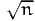

"This is the first line of the model description"
"This is the second line of the model description"
Note that it will be copied verbatim in the output files. Note that, if it contains special characters which are interpreted by LATEX, such as $ or &, you may need to edit the LATEX output file before processing it.
100 * choice
Any expression described in Section [Expressions] is valid here.
Important: do not use the weight section in Biosim.
- Name: the first character must be a letter (any case) or an underscore (_), followed by a sequence of letters, digits, underscore (_) or dashes (-), and terminated by a white space. Note that case sensitivity is enforced. Therefore varname and Varname would represent two different variables.
- Default value that will be used as a starting point for the estimation, or used directly for the simulation in BIOSIM.
- Lower bound on the valid values1 ;
- Upper bound on the valid values;
- Status, which is 0 if the parameter must be estimated, or 1 if the parameter has to be maintained at the given default value.
Note that this section is independent of the specific model to be estimated, as it captures the deterministic part of the utility function.
// Name Value LowerBound UpperBound status
ASC1 0 -10000 10000 1
ASC2 -0.159016 -10000 10000 0
ASC3 -0.0869287 -10000 10000 0
ASC4 -0.51122 -10000 10000 0
ASC5 0.718513 -10000 10000 0
ASC6 -1.39177 -10000 10000 0
BETA1 0.778982 -10000 10000 0
BETA2 0.809772 -10000 10000 0
- Default value that will be used as a starting point for the estimation (common value: 1.0);
- Lower bound on the valid values (common value: 1.0e-5);
- Upper bound on the valid values (common value: 1.0);
- Status, which is 0 if the parameter must be estimated, or 1 if the parameter has to be maintained at the given value.
- The identifier of the alternative, with a numbering convention consistent with the choice definition;
- The name of the alternative: the first character must be a letter (any case) or an underscore (_), followed by a sequence of letters, digits, underscore (_) or dashes (-), and terminated by a white space;
- The availability condition: this must be a direct reference to an entry in the data file, or to an expression defined in the Section [Expressions];
- The linear-in-parameter utility function is composed of a list of
terms, separated by a +. Each term is composed of the name of
a parameter and the name of an attribute, separated by a
*. The parameter must be listed in Section [Beta], if it is a
regular parameter. If it is a random parameter, the syntax
is
nameParam [ nameParam ]
in the case of the normal distribution, or :
nameParam { nameParam }
to get a random parameter that comes from a uniform distribution. For example, in the case of the normal:
BETA [ SIGMA ]
Note that the blank after each name parameter is required. Also, parameters BETA and SIGMA have to be listed in Section [Beta]. In the context of an independent random parameter, BETA represents the mean while SIGMA corresponds to the standard deviation. With correlated random parameters, SIGMA technically corresponds to the appropriate term in the Cholesky decomposition matrix that captures the variance-covariance structure among the random parameters. An attribute must be an entry of the data file, or an expression defined in Section [Expressions]. In order to comply with this syntax, the Alternative Specific Constants must appear in a term like ASC * one, where one is defined in the Section [Expressions]. Here is an example:
[Utilities]
// Id Name Avail linear-in-parameter expression
1 Alt1 av1 ASC1 * one + BETA1 [SIGMA] * x11 + BETA2 * x12
2 Alt2 av2 ASC2 * one + BETA1 [SIGMA] * x21 + BETA2 * x22
3 Alt3 av3 ASC3 * one + BETA1 [SIGMA] * x31 + BETA2 * x32
4 Alt4 av4 ASC4 * one + BETA1 [SIGMA] * x41 + BETA2 * x42
5 Alt5 av5 ASC5 * one + BETA1 [SIGMA] * x51 + BETA2 * x52
6 Alt6 av6 ASC6 * one + BETA1 [SIGMA] * x61 + BETA2 * x62If the utility function does not contain any part which is linear-in-parameters, then the keyword $NONE must be written. For example:
[Utilities]
// Id Name Avail linear-in-parameter expression
1 Alt1 av1 $NONE
the syntax is
1 Alt1 av1 BETA_1 * X11
[GeneralizedUtilities]
1 BETA_2 * (X21 ^ LAMBDA - 1) / LAMBDA
Another example where a nonlinear part is required is when specifying a log normal random coefficient.
- The name of the first random parameter in the given pair. If it appears in the utility function as BETA [ SIGMA ], its name must be typed BETA_SIGMA.
- The name of the second random parameter involved in the pair, using the same naming convention.
- The default value that will be used as a starting point for the estimation;
- The lower bound on the valid values;
- The upper bound on the valid values;
- The status, which is 0 if the parameter must be estimated, or 1 if the parameter has to be maintained at the given value.
If no covariance is to be estimated, you must either entirely remove the section, or specify $NONE as follows:
$NONE
We now summarize the syntax that can be used for generating new variables. Variables which form an expression might be of type float or of type integer. You can use numerical values or the name of a numerical variable. New variables can be created using unary and binary expression operators.
Unary expressions:
- y = sqrt(x) // y is square root of x.
- y = log(x) // y is natural log of x.
- y = exp(x) // y is exponential of x.
- y = abs(x) // y is absolute value of x.
binary expression: (Numerical)
- y = x + z // y is sum of variables x and z
- y = x - z // y is difference of variables x and z
- y = x * z // y is product of variables x by z
- y = x / z // y is division of variable x by z
- y = x ^ z // y is x to power of z (square would be y = x ^ 2)
- y = x % z // y is x modulo z, i.e. rest of x/z
binary expression: (Logical)
- y = x == z // y is 1 if x equals z, 0 otherwise
- y = x != z // y is 1 if x not equal to z, 0 otherwise
- y = x || z // y is 1 if x != 0 OR z != 0, 0 otherwise
- y = x && z // y is 1 if x != 0 AND z != 0, 0 otherwise
- y = x < z // y is 1 if x < z (note: also > )
- y = x <= z // y is 1 if x <= z (note: also >= )
- y = max(x,z) // y is max of x and z (note: also min)
Note that an expression is considered to be TRUE if it is non zero, and FALSE if it is zero. For a full description of these expressions and alternative syntaxes, please look at the files patSpecParser.y and patSpecScanner.l in the BIOGEME distribution.
Loops can be defined if several expressions have almost the same syntax. The idea is to replace all occurrences of a string, say xx, by numbers. The numbers are generated within a loop, defined by 3 numbers: the start of the loop (a), the end of the loop (b) and the step (c) with the following syntax:
The expression
other_expression_xx * term_xx_first
is equivalent to
my_expression_3 = other_expression_3 * term_3_first
my_expression_5 = other_expression_5 * term_5_first
Warning: make sure that the string is awkward enough so that it cannot match any other instance by mistake. For example, the loop
is equivalent to
my_e3ression_3 = other_e3ression_3 * term_3_first
my_e5ression_5 = other_e5ression_5 * term_5_first
which is probably not the desired effect.
- Group number: the numbering must be consistent with the group definition;
- Default value that will be used as a starting point for the estimation (1.0 is a good guess);
- Lower bound on the valid values;
- Upper bound on the valid values;
- Status, which is 0 if the parameter must be estimated, or 1 if the parameter has to be maintained at the given value.
Clearly, one of the groups must have a fixed scale parameter.
1 SB_1
4 SB_4
6 SB_6
- Nest name: the first character must be a letter (any case) or an underscore (_), followed by a sequence of letters, digits, underscore (_) or dashes (-), and terminated by a white space;
- Default value of the nest parameter μm that will be used as a starting point for the estimation (1.0 is a good guess);
- Lower bound on the valid values. It is usually 1.0, if μ is constrained to be 1.0. Do not forget that, for each nest i, the condition μi ≥ μ must be verified to be consistent with discrete choice theory;
- Upper bound on the valid values;
- Status, which is 0 if the parameter must be estimated, or 1 if the parameter has to be maintained at the given value.
- The list of alternatives belonging to the nest, numbered as specified in Section [Utilities]. Make sure that each alternative belongs to exactly one nest, as no automatic verification is implemented in BisonBiogeme.
- Nest name: the first character must be a letter (any case) or an underscore (_), followed by a sequence of letters, digits, underscore (_) or dashes (-), and terminated by a white space;
- Default value of the nest parameter μm that will be used as a starting point for the estimation;
- Lower bound on the valid values. It is usually 1.0, if μ is constrained to be 1.0. Do not forget that, for each nest i, the condition μi ≥ μ must be verified to be consistent with discrete choice theory;
- Upper bound on the valid values;
- Status, which is 0 if the parameter must be estimated, or 1 if the parameter has to be maintained at the given value.
- Alternative name, as defined in Section [Utilities];
- Nest name: the first character must be a letter (any case) or an underscore (_), followed by a sequence of letters, digits, underscore (_) or dashes (-), and terminated by a white space;
- Default value of the parameter capturing the level at which an alternative belongs to a nest that will be used as a starting point for the estimation;
- Lower bound on the valid values (usually 0.0);
- Upper bound on the valid values (usually 1.0);
- Status, which is 0 if the parameter must be estimated, or 1 if the parameter has to be maintained at the given value.
- The parameter (from Section [Beta]) being the numerator of the ratio;
- The parameter (from Section [Beta]) being the denominator of the ratio;
- The name of the ratio, to appear in the output file: the first character must be a letter (any case) or an underscore (_), followed by a sequence of letters, digits, underscore (_) or dashes (-), and terminated by a white space.
where NEST_A and NEST_B are names of nests defined in Section [NLNests], Section [CNLNests] or Section [NetworkGEVNodes]. This section will become obsolete in future releases, as there is now a section for linear constraints on the parameters: (Section [LinearConstraints]).
- Node name: the first character must be a letter (any case) or an underscore (_), followed by a sequence of letters, digits, underscore (_) or dashes (-), and terminated by a white space;
- Default value of the node parameter μj that will be used as a starting point for the estimation;
- Lower bound on the valid values. It is usually 1.0. Check the condition on the parameters for the model to be consistent with the theory in Bierlaire (2002);
- Upper bound on the valid values;
- Status, which is 0 if the parameter must be estimated, or 1 if the parameter has to be maintained at the given value.
- Name of the a-node: it must be either __ROOT or a node listed in the section [NetworkGEVNodes].
- Name of the b-node: it must be either a node listed in the section [NetworkGEVNodes], or the name of an alternative.
- Default value of the link parameter that will be used as a starting point for the estimation;
- Lower bound on the valid values.
- Upper bound on the valid values;
- Status, which is 0 if the parameter must be estimated, or 1 if the parameter has to be maintained at the given value.
- Formula = number,
- Formula ≤ number,
- Formula ≥ number.
The syntax is formally defined as follows:
equation = numberParam |
equation >= numberParam
equation: eqTerm |
- eqTerm |
equation + eqTerm |
equation - eqTerm
eqTerm: parameter | numberParam * parameter
For example, the constraint
is written
and the constraint
is written
or
The section must contain a list of functions h(x). For example, the constraint
is written
ALPHA_A1 ^ MU_A + ALPHA_B1 ^ MU_B - 1.0
is equivalent to
where z is an additional variable (called slack variable).
where nameDiscreteParam is the name of the random parameter, and listOfDiscreteTerms is recursively defined as
listOfDiscreteTerms oneDiscreteTerm
where oneDiscreteTerm is defined as
where nameValueParam is the name of the parameter capturing the discrete value of the random parameter, and nameProbaParam is the name of the parameter capturing the associated probability. Both must be defined in Section [Beta]. As an example,
BETA1 < B1 ( W1 ) B2 ( W2 ) >
defines a random parameter BETA1, which takes the value B1 with probability (or weight) W1, and the value B2 with probability W2. Note that for this to make sense, the constraint W1 + W2 = 1.0 should be imposed (Section [LinearConstraints]). Note also that the parameter BETA1 must not appear in Section [Beta].
Each observation consists of an aggregate, a set of actual alternatives that
may correspond to the observed situations. If  obs is the observed
aggregate, than the probability given by the choice model is
obs is the observed
aggregate, than the probability given by the choice model is
|
| (1) |
Equation P(obs|i) can be viewed as a measurement equation, and
represents the probability to observe obs if i was the actual choice.
In BisonBiogeme, an aggregate observation is represented by a consecutive
sequence of elemental observations, associated with the probability
P(obs|i). Two additional sections in the model specification file are
used for the specification: section [AggregateLast] (see above) and
section [AggregateWeight], that associates a weight to elemental
observations of an aggregate. It corresponds to the term P(obs|i) in Eq.
(1). Any expression described in Section [Expressions] is valid
here.
ASC1 "Constant for alt. 1"
ASC2 "Constant for alt. 2"
ASC3 "Constant for alt. 3"
ASC4 "Constant for alt. 4"
ASC5 "Constant for alt. 5"
ASC6 "Constant for alt. 6"
BETA1 "$\beta_1$"
BETA2 "$\beta_2$"
will produce the following table:
| Robust | |||||||||
| Variable | Coeff. | Asympt. | |||||||
| number | Description | estimate | std. error | t-stat | p-value
| ||||
| 1 | Constant for alt. 2 | -0. | 159 | 0. | 106 | -1. | 49 | 0. | 13 |
| 2 | Constant for alt. 3 | -0. | 0869 | 0. | 111 | -0. | 78 | 0. | 43 |
| 3 | Constant for alt. 4 | -0. | 511 | 0. | 172 | -2. | 97 | 0. | 00 |
| 4 | Constant for alt. 5 | 0. | 719 | 0. | 158 | 4. | 54 | 0. | 00 |
| 5 | Constant for alt. 6 | -1. | 39 | 0. | 195 | -7. | 12 | 0. | 00 |
| 6 | β1 | 0. | 779 | 0. | 0301 | 25. | 85 | 0. | 00 |
| 7 | β2 | 0. | 810 | 0. | 0307 | 26. | 42 | 0. | 00 |
This section is for advanced users only. Use it at your own risk. If you feel that you need it, you may seriously consider using PythonBiogeme instead of BisonBiogeme.
When nonlinear utility functions are used, BisonBiogeme computes automatically the derivatives needed by the maximum likelihood procedure. However, this automatic derivation can significantly slow down the estimation process, as no simplification is performed. This section allows the user to provide BisonBiogeme with the analytical derivatives of the utility function, in order to speed up the estimation process. In some instances, half the estimation time was spared thanks to this feature.
A row must be provided for each combination of nonlinear utilities (defined in the Section Section [GeneralizedUtilities]) and parameters involved in the formula. Each of these rows contains three items:
- the identifier of the alternative,
- the name of the parameter,
- the formula of the derivative.
For instance, assume that the systematic utility of alternative 1 is
so that

which is coded in BisonBiogeme as follows:
// Id Name Avail linear-in-parameter expression (beta1*x1 + beta2*x2 + ... )
1 Alt1 av1 ASC1 * one
.
.
[GeneralizedUtilities]
1 BETA1 * ((x11 + 10 ) ^ LAMBDA11 - 1) / LAMBDA11 +
BETA2 * ((x12 + 10 ) ^ LAMBDA12 - 1) / LAMBDA12
[Derivatives]
1 BETA1 ((x11 + 10 ) ^ LAMBDA11 - 1) / LAMBDA11
1 BETA2 ((x12 + 10 ) ^ LAMBDA12 - 1) / LAMBDA12
1 LAMBDA11
BETA1 * ((x11 + 10) ^ LAMBDA11 * LN(x11 + 10) * LAMBDA11
- (x11 + 10) ^ LAMBDA11 + 1) / (LAMBDA11 * LAMBDA11 )
1 LAMBDA12
BETA2 * ((x12 + 10) ^ LAMBDA12 * LN(x12 + 10) * LAMBDA12
- (x12 + 10) ^ LAMBDA12 + 1) / (LAMBDA12 * LAMBDA12 )
In addition to usual expressions, the formula may contain the following instruction:
which means that you ask BisonBiogeme to perform the derivation of the formula for you. Although it may be useful to simplify the coding of the derivatives, it is mandatory to use it for random parameters.
If BETA [ SIGMA ] is a random parameter, its derivative with respect to BETA is 1, but its derivative with respect to SIGMA cannot be written by the user, and must be coded
For instance, assume that the nonlinear utilities are defined as
2 exp( BETA1 [ SIGMA1 ] ) * x21
The derivatives are coded as follows:
1 BETA1 exp( BETA1 [ SIGMA1 ] ) * x11
1 SIGMA1 exp( BETA1 [ SIGMA1 ] ) * x11
* $DERIV( BETA1 [ SIGMA1 ] , SIGMA1 )
2 BETA1 exp( BETA1 [ SIGMA1 ] ) * x21
2 SIGMA1 exp( BETA1 [ SIGMA1 ] ) * x21
* $DERIV( BETA1 [ SIGMA1 ] , SIGMA1 )
It is very easy to do an error in coding the analytical derivatives. If there is an error, BisonBiogeme will not be able to estimate the parameters, and will not even be able to detect that there is an error. Therefore, we strongly suggest to set the parameter gevCheckDerivatives to 1 and make sure that the numerical derivatives match sufficiently well the analytical derivatives. Also, estimate the model with few observations and few draws, once with and once without this section. The results should be exactly the same.
- The name of the random parameter to be tested. If this parameter appears in the utility function as BETA [ SIGMA ], its name in this section must be typed BETA_SIGMA.
- A list of positive integers associated with a parameter. The integer is the degree of the Legendre polynomial, and the parameter the associated coefficient in the development. Note that the name of the parameter must appear in Section [Beta].
For instance, if parameter BETA [ SIGMA ] is tested using a seminonparametric development defined by
the syntax in BisonBiogeme is
// Name Value LowerBound UpperBound status (0=variable, 1=fixed)
....
BETA 0 -10000 10000 0
SIGMA 1 -10000 10000 0
SMP1 0 -10000 10000 0
SMP3 0 -10000 10000 0
SMP4 0 -10000 10000 0
[SNP]
// Define the coefficients of the series
// generated by the Legendre polynomials
BETA_SIGMA
1 SMP1
3 SMP3
4 SMP4
Note that only one random parameter can be transformed at a time.
....
tau1 0.3 -1000 1000 1
tau2 0.4 -1000 1000 0
tau3 0.5 -1000 1000 0
[OrdinalLogit]
1 $NONE // -infty --> tau1
2 tau1 // tau1 --> tau2
3 tau2 // tau2 --> tau3
4 tau3 // tau3 --> +infty
[LinearConstraints]
tau1 - tau2 <= 0
tau2 - tau3 <= 0
Note that the constraints impose that the segments are well-defined. Recall also that the characters // represent a comment in the file and they are not interpreted by BisonBiogeme, as well as all remaining characters on the same line. Therefore, the following syntax for that section is completely equivalent:
1 $NONE
2 tau1
3 tau2
4 tau3
However, we strongly advise to use comments in order to clearly identify the segments.
There is a line for each test, containing four items:
- The first item defines the function t introduced by Fosgerau (2008)
to reduce the dimensionality of the test. It is typically either
the probability of an alternative, or an expression involving
coefficients and attributes of the models, as soon as the expression is
continuous and not discrete. If it is a probability, the syntax
is
$P { AltName }
where AltName is the name of the alternative as defined in Section [Utilities]. If it is a general expression, the syntax is
$E { expr }where expr is an expression complying with the syntax of Section [Expressions]. However, it may also contain estimated parameters.
- The second item is a parameter c used to define the bandwidth for the nonparametric regression performed by the test (see end of Section 2.1 in Fosgerau, 2008). The bandwidth used by Biosim is defined as c∕, where n is the sample size. Most users will use the value c = 1.
- The third and the fourth item are lower and upper bounds (resp.) Values of t outside of the bounds will not be used in the produced pictures. It is good practice to use wide bounds first, and to adjust them in order to obtain decent pictures. Note that if t is a probability, it does not make sense to have bounds wider and [0 : 1].
- The last item is the name of the function t, used in the report. Make sure to put the name between double-quotes.
Here is an example of the syntax:
$P { Alt1 } 1 0 1 "P1"
$E { x31 } 1 -1000 1000 "x31"
|
| (2) |
The syntax is illustrated by the following example.
// Description of the choice subsets to compute the new
// variable for McFadden’s IIA test
// Name list_of_alt
C123 1 2 3
C345 3 4 5
Each row corresponds to a new variable. It consists in the name of the variable (it will appear as the column header in the output of Biosim), followed by the list of alternatives to be included in the associated subset.